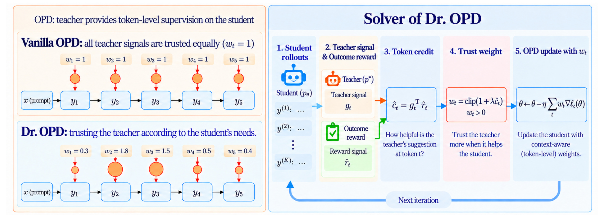
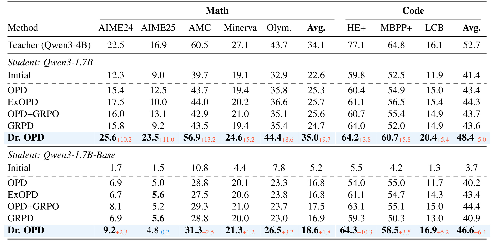
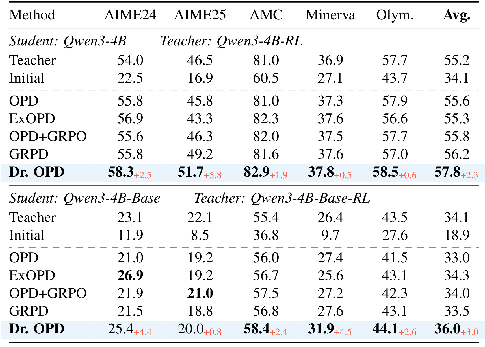
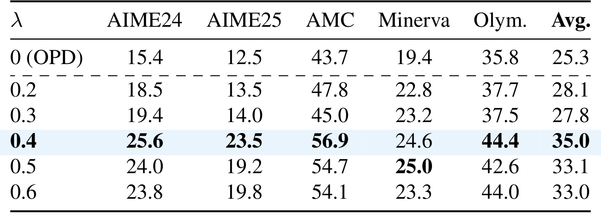
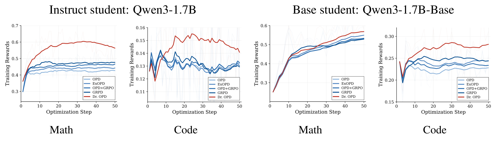
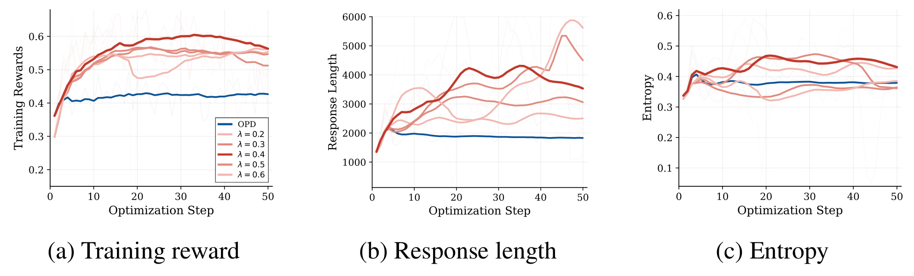

Dr. OPD：按照学生收益选择应该信任的教师信号
Dr. OPD研究大模型在线策略蒸馏中如何按任务收益分配教师监督：学生沿自己生成的回答接受冻结教师反馈，再用结果奖励与教师纠正方向的梯度对齐决定词元信任权重。论文由罗格斯大学统计系的Zhenyu Wang、Tianze Wang、Linjun Zhang与Yifan Hu完成，前两位为共同一作，一作主机构为罗格斯大学。英文题名为Dr. OPD: Learning What to Follow for Optimal On-Policy Distillation of Large Language Models，首次公开于2026年9月29日17:07 UTC，即北京时间9月30日01:07；唯一论文入口为arXiv:2609.38025。本笔记依据v1主文及附录精读，访问日期为2026年10月1日。官方代码Dr-OPD已核验可访问，含Dropd、scripts、tests、docs、run.sh及中英文README，本轮未运行训练复现。
教师在不同词元上的监督对学生最终表现作用不同：有的纠正关键推理错误，有的几乎不影响最终答案。
1. 背景和问题
在线策略蒸馏首先让学生自己生成回答，再让更强、冻结的教师在这些实际访问的上下文中提供下一词元分布。学生由此学到的是“当我走到这个状态，教师希望怎样继续”，而不是只复制教师完整生成的轨迹。这个区别对长推理回答尤其有用：学生可能在一处计算错误后进入教师正常回答不会访问的上下文，而教师仍可给出纠正方向。本文接受这条训练路径，但质疑了另一项默认设定：每个位置的教师反馈是否都应该以相同强度进入更新。一个更强的教师并不意味着每种词语偏好都同等重要，教师和学生在表达习惯上存在差异，也不自动说明学生最终答案需要改变。
作者用数学解题作动机。教师可能希望学生修正决定后续计算的关键推理，也可能只是偏好另一个同义措辞。两种信号在普通蒸馏目标中都会成为分布差异，但它们对最终答案正确性的作用很不一样。长度增加会让这种差别更突出：一段回答可以有很多过渡词、复述和格式词元，真正决定成败的计算却可能只占少数位置。若所有信号都接受同样的教师信任度，优化资源可能用于缩小与最终任务收益关系很弱的分布距离。这里的“信任”是损失梯度中的正数权重，不是自然语言评价教师是否可靠；权重小于一表示减弱纠正，大于一表示增强纠正，论文始终要求权重大于零。
与此相对，结果奖励强化学习通常只告诉模型整条回答是否正确。数学答案检查和代码测试可以给出清晰的零一奖励，但一条错误回答里不代表所有词元都错误，一条正确回答也不代表每一步教师监督都有效。在线蒸馏的优势是密集信号，结果奖励的优势是直接对应任务目标。本文尝试把二者结合成一种信用分配机制：先构造教师对单个词元的纠正方向，再判断该方向与提高任务奖励的方向是否一致，从而决定应该多信还是少信教师。这使奖励的作用进入蒸馏权重，而不是简单地在蒸馏之外并列相加一个强化学习损失。
方法名称Dr. OPD意为“正确实施的在线策略蒸馏”。它的上层目标评价加权蒸馏后学生的预期任务奖励，下层目标仍然让学生匹配教师分布。这个双层定义把“接近教师”放在实现任务表现的手段位置，也解释了为什么较小学生在部分评测上可以超过教师：训练还引入了学生自身回答的结果奖励，信息来源已经超出单纯模仿教师。不过，超过教师首先是一项实验观察，不是双层定义推出的普遍结论。本文的强到弱数学平均值达到35.0，超过4B教师的34.1；同一设置的代码平均值48.4仍低于教师52.7，因此不能把数学结论推广到所有任务。
本文对“在线”的使用还需要明确。每轮训练会根据当前学生重新生成轨迹，教师保持冻结；这一更新方式缓解教师轨迹与学生轨迹的分布不一致。它不是线上产品实时学习，也没有报告面向用户服务的在线实验。训练过程中词元权重由当前轨迹与奖励估计重新计算，推理时则只使用训练后的学生，不需要再调用教师或奖励验证器。因此，额外成本主要出现在后训练阶段。作者用雅可比向量积减少逐词元梯度内积的计算负担，但这不等于每轮额外计算为零，学生奖励梯度、方向导数和同步副本仍需要资源。
理解论文时最容易混淆的另一处是理论与实现的距离。理论首先定义精确双层最优问题，然后用固定当前采样分布、单步学生更新与局部平滑奖励构造可解下界。实践又进一步用当前学生的奖励方向代替普通蒸馏更新后学生的奖励方向，附录中还加入奖励动量、AdamW二阶矩缩放和概率比裁剪。于是“闭式求解”确实适用于局部代理问题的逐点权重，却不意味着已经解析求出长期训练中的全局最佳教师信任函数。笔记后面保留这三个层次，避免把成立条件不同的结论拼成一个无条件性能保证。
从研究问题看，本文更值得关注的是如何让任务收益决定密集监督的分配，而不是重新设计学生网络。学生和教师采用现成Qwen3系列，所比较的方法共享训练框架、采样器与验证器，差异主要在每个词元的学习信号。这样的设计有利于观察权重机制的作用，但也限制了外推范围：当前证据来自数学与代码的可验证任务、一个模型家族和短程后训练。开放问答或对话任务中，如果奖励模型噪声更高，教师纠正与奖励估计的对齐会受到不同影响。作者提及一般任务可用学习到的奖励模型，但没有在主结果中直接验证这一延伸。
从教师与学生关系看，还需要区别两种典型限制。第一是教师的局部建议未必与最终结果同向，尤其某些表述偏好只是另一条正确路径；第二是学生能力不足，教师指出的方向虽正确，学生有限容量或有限训练时间却无法完整模仿。严格正权重让这两种情况都在一个蒸馏框架下处理，不把负信用位置直接变成反向教师目标。它保留教师纠正但降低强度，让有限的更新幅度优先服务当前学生可利用的信号。附录还说明若学生完全可表示教师且真正收敛到零损失，各正权重的最小值会一致，这进一步表明本文关注的是学习过程中有约束的资源分配。因而论文问题不能简化为挑选某几个词元训练，也不是把低奖励回答整条删除；它对所有有效回答词元计算权重，保留失败回答中仍然有用的教师监督。
2. 方法
2.1 加权在线策略蒸馏
图1把输入与输出关系放在同一训练回路中：学生生成多条回答，冻结教师给出词元概率，验证器给出整条回答的结果奖励，二者通过梯度对齐产生信用，再变成下一次蒸馏更新的信任权重。这里教师分布控制纠正方向，而奖励方向控制纠正强度；权重不改变教师本身，也不要求额外训练一个权重预测网络。下面先看加权目标为什么仍是合法的蒸馏目标，再解释权重来自哪里。

图1左侧上半部分是普通在线蒸馏，五个词元位置的权重都为一，教师反馈按同一强度进入学生更新；下半部分则示意同一回答中的权重可以分别为零点三、一点八、一点五、零点五、零点四。圆圈面积提示监督强弱，数值是机制示意而不是一条真实数学回答的测量结果。图右侧说明这些权重不是根据教师概率大小直接排序：首先学生对一个提示生成多条回答，然后教师监督和结果奖励共同构造词元信用。教师纠正梯度与奖励梯度内积为正时，增加该教师纠正对任务有帮助，权重可以高于一；内积为负时，权重低于一，但仍保持正值，因此不会把教师纠正直接翻转成反教师学习。第三、四、五个模块分别承担信用评估、截断权重、更新学生的角色，最下面的箭头表明学生改变后要重新采样上下文，再重复这个过程。图上的乘积包含参数空间中的方向关系，不能读成两个标量奖励简单相乘，也不能读成教师在给每个词元单独判对错。词元信用来源于整条回答的结果反馈经由参数梯度投射到该词元的教师纠正方向，这是一种局部敏感度分解。图中没有显示归一化尺度、动量与优化器状态，它呈现的是主文算法逻辑；这些实现细节会改变实际数值，后面需与附录对应阅读。整张图最直接的启示是任务奖励没有替代教师，而是在每轮学生当前需求下调节密集监督的分配。左侧出现小于一的权重并不表示丢弃词元，右侧学生多条回答也不是教师重新生成的监督答案；实际计算始终沿学生访问的上下文打分。这样的输入来源决定了信用会随学生改变而变化，不能预先离线固定一组位置权重。
符号解释：$x$是提示，$y$是由当前参考学生$p_{\bar\theta}$采样的回答，$s_t=(x,y_{<t})$是第$t$个词元的上下文，$p_\theta$与$p^*$分别为可训练学生和冻结教师。式中用参考参数$\bar\theta$标明本轮生成轨迹固定；求梯度时不对采样分布继续反向传播，轮与轮之间才刷新它。这是原文式2在附录C.1澄清后的写法。普通目标对所有上下文使用反向KL，输入是教师与学生下一词元分布，输出是学生参数的蒸馏梯度。
符号解释：$v$遍历词表$\mathcal V$，$w(s,v)>0$是上下文与词元共同决定的权重，$D_w$是加权蒸馏损失。括号中的线性修正项是核心设计。若只把权重乘在普通KL各项上，词元权重不一致时求和可能为负；加入负学生概率和正教师概率后，每一项都成为非负的广义KL。正权重保证损失为零仅在参考上下文几乎处处学生与教师分布一致时成立。当权重恒为一，两项概率之和相抵消，恢复普通KL。因此改变权重可以调整有限容量学生的取舍与训练轨迹，但保持了“趋近教师”这个下层目标；未访问的零测度上下文不在此结论约束之内。
2.2 双层目标与闭式权重
符号解释：$V(x,y)\in[0,1]$是结果奖励，$R$是学生自身生成分布下的预期奖励，$\theta^*(w)$表示给定权重后下层训练得到的解，边界满足$0<w_{\min}<1<w_{\max}$。这是原文式5。输入是可行的正权重函数，输出是训练后表现最好的学生选择。下层若有多个最优解，附录采用其中奖励最高者的乐观约定。精确求解需要针对不同权重重复训练学生，且权重定义在所有上下文和词元上，代价不可行；作者随后只优化本轮单步响应，未声称求出该全局双层最优解。
符号解释：$y_t$是实际采样到的词元，$w_t=w(s_t,y_t)$，$g_t$是教师纠正方向，$\eta>0$是学生步长。式6至7把完整词表损失的梯度写成当前学生采样的期望。教师给采样词元的概率更高时，对数比为正，纠正局部提升学生对该词元的概率；更低时则降低。广义KL中的线性修正使微分时额外常数相消，得到这个简洁形式。权重与参考轨迹都须固定；若对权重计算过程继续反传，或在同一轨迹上远离参考参数多步更新而忽略概率比，就不再是该等式描述的梯度。
符号解释：$c_t$为词元信用，$\theta^+_{\mathrm{vani}}$是从相同参考学生出发做普通蒸馏一步后的参数。它衡量在权重一附近增强教师纠正能否提高更新后学生的奖励，是按参考词元占用测度定义的敏感度，不是单个词元自身的零一正确性。正内积意味着方向对齐，负内积意味着冲突。即使教师概率很高，也可能与该任务奖励方向不一致；即使整个回答失败，其中个别纠正仍可能值得增强。信用把这两种层次的判断区分开。
符号解释：$L_R$是奖励梯度的局部Lipschitz常数，$\lambda>0$决定允许偏离普通权重的强度。第一项奖励对齐收益与第二项二次惩罚组成原文式9的下界，所需条件包括有限期望长度、教师纠正有限二阶矩、可交换微分与期望以及一步响应位于平滑邻域。较大偏离可能增加奖励，但同时带来对线性近似的风险，所以二次项约束这种偏离。本文不估计真实模型的$L_R$来认证实验中的超参数，而是把条件用于理论推导。
符号解释：$\operatorname{clip}$把权重截断在可行区间，$w^+$是逐点最大化下界得到的闭式解，右侧是原文式11的一步奖励增益下界。只要真实信用在正测度集合非零，该下界严格为正。其意义是同一起点、同一固定参考测度、相同单步更新下加权解优于普通解；它没有证明有限样本估计永远准确，没有证明实践的AdamW更新服从同一界，也没有证明长期收敛到双层最优。闭式权重的优势在于不训练额外权重模型，而理论保障始终是局部单步比较。
2.3 雅可比向量积与实用求解器
符号解释：$\mathcal B$是当前采样批，$A$是组相对优势，$r_{bi}$为提示$b$下回答$i$的奖励，$\bar r_b$与$s_b$是同提示多条回答的奖励均值和样本标准差，$\epsilon_A$稳定分母。这是主文奖励梯度估计与附录B.1的优势定义；实现还按每条回答长度归一化。为了避免先普通蒸馏、再重新生成一批回答，作者用当前参数的奖励方向近似更新后参数的方向。一组回答全对或全错时优势全零，无法提供这个批次的奖励区分，这解释了弱Base学生需要更容易的训练数据。
符号解释：$d_t$是教师对数概率比，$u$是用于信用计算的奖励方向；主文算法取$u=\hat r$，附录实现取奖励动量除以学生优化器二阶矩平方根得到的缩放方向。方向导数由前向模式JVP一次计算所有词元的输出，不物化每个词元对应的参数维梯度，也不是有限差分扰动。实现使用上轮偏差修正后的奖励动量和更新前AdamW状态，关闭JVP副本的dropout并同步学生参数；缺少状态时权重先回到一。该处理降低估计波动，但也使实际信用和理论中的精确奖励梯度内积存在差别。
符号解释：$K=8$是同提示回答数，$T_{bi}$是有效回答长度，$N_b$是该提示全部有效回答词元数，$\sigma_b$是信用均方根尺度，$\epsilon_\sigma$防止零除。尺度按词元数加权，不去均值，排除提示与padding，却包含零信用的有效回答词元。主实验$\lambda=0.4$；全零信用给权重一。最后把权重和$d_t$的乘积作为分离梯度的词元优势送入带概率比、裁剪与负优势双重裁剪的actor损失，用AdamW更新。计算奖励方向的梯度在actor更新前清空。训练额外使用教师、验证器和JVP，推理只保留学生；这是求解器训练与部署的边界。
3. 实验结果
3.1 设置、度量与可比范围
实验覆盖四种学生教师组合。强到弱设置用Qwen3-4B Instruct教师指导Qwen3-1.7B Instruct或Qwen3-1.7B-Base；同规模设置用经过结果奖励强化学习的4B教师指导对应4B Instruct或4B-Base学生。所有教师冻结。这里“强”可来自更多参数，也可来自同样参数下更多后训练，二者必须分开。数学在DeepMath-103K训练，代码通常在Eurus-RL-Code训练；附录的重要例外是1.7B-Base数学用难度区间三至四，其他学生用六至十，Base代码用APPS入门和TACO EASY。较简单数据提高同组成功失败并存的机会，确保组相对奖励能产生非零信号，因此不宜把Base与Instruct收益差别全部归因于初始化。
所有方法共享verl训练器、采样引擎和验证器，单节点八张H100，训练五十步；批与小批大小均为一百二十八，每提示八条回答，每步一千零二十四条rollout，学习率恒定为十的负五次方，梯度裁剪为一，提示上限一千零二十四词元，回答上限一万二千二百八十八词元，温度为一。多数学生关闭thinking模式并使用各自chat模板，Base采用固定四样例数学提示，并在首个完成的盒装答案或下一个问题分隔符处截断。这些条件在同一学生教师组合内对方法共享。论文没有把每个生成词元数、累计训练FLOPs或墙钟时间匹配作为主结果的独立控制，因此相同步数不等于相同成本。
数学报告AIME24、AIME25、AMC、Minerva Math和OlympiadBench的平均采样准确率avg@16；代码报告HumanEval+、MBPP+和LiveCodeBench的avg@4。这里avg是多次采样回答的平均正确率，不能理解为十六次中只要一次正确就计成功的pass@16。每十个优化步在被评测数据集上测一次并选择表现最好的checkpoint，这也是原文采用的报告方式。该设计能比较短程训练中的最好表现，却引入评测集选点偏差；没有额外独立验证集选点与最终封存测试的信息，也未给多随机种子误差条，因此零点几个百分点的差别应比大幅收益更谨慎看待。
基线包括统一权重OPD、教师信号外推ExOPD、蒸馏与GRPO等权相加的OPD+GRPO，以及按奖励门控的GRPD。Dr. OPD和后两者都用了结果奖励，故其优势不能仅解释为“多了一份奖励信息”。它需要证明奖励进入词元教师信任度这一方式带来更多收益。共享验证器和训练框架让这种比较更有针对性，但作者没有在主文给出奖励方向缩放、动量、RMS和JVP近似的逐项完整消融，当前实验更直接支撑整个实现包的效果。
3.2 大教师到小学生

表1同时呈现教师、初始化学生、五种训练方法以及两种学生初始化，阅读时应沿同一个学生块比较，不能只取蓝色行的平均值。对于1.7B Instruct学生，普通OPD数学平均从初始22.6提升到25.3，Dr. OPD达到35.0，比OPD高9.7个百分点，也比4B教师34.1高0.9个百分点。分任务提升相对OPD为AIME24的10.2、AIME25的11.0、AMC的13.2、Minerva的5.2和OlympiadBench的8.6个百分点，改善覆盖全部五个数学测试，但AMC和Minerva仍低于教师，说明平均超越不代表每个测试超越。代码平均从OPD的43.4增至48.4，增加5.0个百分点，其中HumanEval+为64.2、MBPP+为60.7、LiveCodeBench为20.4；代码学生平均仍低于教师52.7，教师在前两个代码集的优势没有被消除。下半部分Base学生数学初始只有5.2，OPD到16.8，Dr. OPD到18.6，平均增加1.8；其AIME25从5.0降到4.8，是明确的单项退化，也低于ExOPD和GRPD的5.6。Base代码从OPD40.2增至46.6，提升6.4个百分点，比其他比较方法平均更好。表中结果支持各学生设置的平均性能更优，而不能支持每个任务都领先所有基线。作者将Base数学较小收益解释为初始正确率低、成功rollout少，使奖励信用不够有信息；附录改用简单训练集正是为缓解这一问题。表内没有置信区间，数学教师超越幅度只有0.9个百分点，仍需要多种子和独立选点测试确认稳定性。表中的彩色下标以普通蒸馏为参照，不能把下标当成相对百分比增长，也不能把相对教师的差值和它混用。另一个值得观察的结构是两种学生的代码平均提升都超过数学Base提升，说明奖励可利用性与任务能力共同制约权重收益。教师每一列都固定在同一上方参考行，各方法学生输出的长度与分布却会变化，平均值比较没有同时给出等长度约束。最后，Base的代码训练集与Instruct不同，因此跨区块比较收益大小是描述现象，无法据此单独估计初始化类型的因果作用。
这一对照还说明OPD+GRPO并没有接近Dr. OPD的大幅数学增益：Instruct数学平均为25.6，GRPD为24.7，而Dr. OPD为35.0。若奖励仅用于整体强化目标或成功门控，未必能选出教师信号中最值得增强的位置。这个差别与论文的信用分配动机一致。不过，机制解释仍属于与证据相符的推断，表1没有直接展示具体词元信用和真实推理错误修复之间的因果映射，也未报告人工标注关键步骤。要证实“模型确实选择了关键推理词元”，还需要查看带监督的词元案例、信用分布和定点替换实验，而不能把高平均准确率自动当作解释性验证。
3.3 同规模蒸馏与教师超越范围

表2的两个区块保持学生和教师参数规模同为4B，教师的优势来自额外强化学习而非更大网络。Instruct学生初始数学平均34.1，RL教师55.2；OPD达到55.6，已经略超过教师，Dr. OPD达到57.8。因此这里继续改善的空间比表1小，但Dr. OPD在AIME24、AIME25、AMC、Minerva和OlympiadBench都超过这个RL教师，并且在该区块优于其他蒸馏基线。需要保留数字精度差别：原表给出相对OPD平均提升下标为2.3个百分点，但用打印的57.8减55.6是2.2；这是原文汇总与显示舍入的口径差异，笔记保留作者2.3的标注同时展示可复算的2.2，不能额外把精度差异解释成独立收益。Base区块中教师平均34.1，OPD为33.0，Dr. OPD为36.0，比OPD高3.0，比教师高1.9。Base在四个数学集超越教师，而AIME25的20.0仍低于教师22.1；与全部基线比，AIME24的25.4也低于ExOPD26.9，AIME25低于OPD+GRPO21.0。蓝色行表示整体效果，并不隐藏这些例外。相比表1，表2更有力地表明同样容量、不同后训练阶段之间，学生不必止步于复制教师平均表现；结果奖励能帮助它重新选择教师信号。但这些结果仅覆盖数学，同规模代码没有列入表2，不能对代码写同样的全设置教师超越结论。它也不是对教师能力上限的否定：教师冻结且没有在同样新训练数据上继续优化，学生结合教师信号和新的任务奖励进行学习，两者信息获取路径不同。教师超越应理解为该评测协议下的最终学生表现，而不是普遍的知识容量反转。表中同规模教师是公开的强化学习checkpoint并保持冻结，初始学生并非教师重新初始化后的同一路径复训。不同后训练来源可能形成不同生成偏好，学生有机会在新采样与新奖励中重新组合已有能力。对这一解释的严格检验还需要给教师同样追加训练预算，或控制双方对训练集的暴露，而表二未包含这些对照。
普通OPD在同规模Instruct设置本来就可以超过教师，这与附录C.3的说明呼应：实际蒸馏的有限时间轨迹、容量取舍和结果评价不同于完美匹配教师分布的理想最小值。如果学生能完全表示教师，并把固定参考损失真的优化到零，那么所有严格正权重共享相同的零损失匹配解。Dr. OPD的有效空间主要在学生无法完全匹配时的取舍，以及未收敛的学习轨迹上。作者的短程五十步训练处于后者，因此不能把该表看成证明“所有正加权KL的最终全局最小值都比教师好”。
3.4 权重强度的收益与敏感性

表3在1.7B Instruct学生与4B教师的强到弱数学设置中，只改变权重强度λ。零对应普通OPD，平均25.3；零点二为28.1，零点三为27.8，零点四为35.0，零点五为33.1，零点六为33.0。所有测试的正值都超过普通OPD，说明机制不是只有极窄参数点才产生改善，但“无须精调”应理解为这些已测正值通常有收益，而不是不同λ之间性能相同。最好的零点四比零点三高7.2个百分点，差异相当明显；在未知任务上仍需要验证集选择强度。分列阅读也能看到平均最优与单项最优不同：AIME24、AIME25、AMC和OlympiadBench的最佳值出现在零点四，Minerva最佳25.0则出现在零点五，高于零点四的24.6。λ继续增大到零点六并没有继续增益，因为信用估计存在噪声，越强的权重偏离越依赖估计可信度与截断。论文理论的λ受步长、奖励平滑度和教师纠正二阶矩共同约束；实用算法却又除以每提示RMS尺度，表3实际上测试的是归一化后求解器的经验超参数，不能拿它直接证明理论平滑条件已满足。消融也没有单独改变上下限：零点零零一和三在这些实验中固定，因此还不清楚收益来自正下界、上界限制还是相对信用排序各多少。表3最稳妥的结论是：在该模型、该训练设置和被评测数学集合中，适度增加词元信任差异有益，零点四是测试范围内平均表现最优值。把它作为跨模型或跨奖励器默认最优值，需要新的证据。除了平均值，五个测试集合的题目数和难度不同，逐列变化有助于辨别是否只由某一集合驱动。原表按列加粗也呈现了这种差异：数学平均最优不等于各类题目难度都选择同一强度。没有标准误时，参数扫描的排名应作为当前运行的观测，而非统计显著性结论。
3.5 奖励、长度和熵的训练动态

图3依次呈现Instruct学生的数学、代码，以及Base学生的数学、代码四个面板。横轴都是优化步，纵轴是学生训练rollout被验证器判为正确的比例，粗曲线采用平滑系数零点九五的指数移动平均，淡线反映原始波动。红色Dr. OPD在Instruct数学面板很快与蓝色基线拉开距离，约二十至三十步达到较高平台，随后稍有下降；这与表1数学测试提升较大相符，但训练奖励不是表1avg@16的同一数据，不能从图中读出测试准确率。Instruct代码面板奖励总体只有零点一量级，红线虽明显更高，后期也回落；低成功率提醒我们代码信用仍来自相对稀疏的可验证正确答案。Base数学的红线与基线早期接近，后期逐步超过，间距比Instruct数学小，符合初始能力较弱时分组奖励信息不足的讨论。Base代码则较早产生红蓝差异，这与附录使用容易代码数据相联系，因此比较四个面板的纵轴数值时必须考虑训练语料和难度不同。图中既没有误差条，也没有按独立随机种子画出的置信带；淡线是同一次训练的波动，不能当作跨运行不确定性。更高训练奖励支持优化方向更贴任务，但仍可能受回答长度、生成分布、数据难度和最佳checkpoint选择影响。图3提供的是训练过程中优势如何形成的证据，它没有独立验证一轮理论奖励增益下界，也没有展示词元信用估计每次都正确。在实际复现中，应该同时监测成功失败混合组比例和零优势组比例，因为曲线平均值相近时，两种采样组成可能提供很不同的梯度信息。尤其在全部回答奖励相同的组内，即使其中每条都是正确答案，组相对优势也为零；成功率持续升高未必让信用梯度持续增强。这种非线性关系会影响训练后期曲线的解释。

图5把相同权重扫描下的三类动态并列：左图训练奖励，中图平均回答词元数，右图策略熵。普通OPD蓝线的长度在约两千词元附近，多个正λ设置出现明显更长的回答，有些后期接近五千至六千词元；零点四的深红线也比普通OPD更长，却不是所有阶段最长的一条。左图多个正λ的奖励曲线都高于OPD，并在后期相对接近，但中图的长度差异可以达到数千词元。这说明权重强度不只是改变最终准确率，也在改变学生生成轨迹形态。右图的熵在不同λ下变化并不完全一致，不能用“更强监督导致熵必然下降”概括；归一化信用增强的是特定方向，学生整体分布可保留或改变不同程度的探索。把三图联系起来，最重要的成本问题是等五十个优化步并非等生成token预算：更长回答会增加学生采样、教师打分和相关JVP处理量，也可能改变正确率。论文没有按相同总生成词元数、相同墙钟时间或相同算力预算重画这组结果，所以当前证据不能排除一部分收益与更长推理轨迹相联系，也不能把“单次JVP避免参数梯度物化”直接翻译为总训练加速。反过来，也不能仅因为长度增长就否认信用机制：同样更长的不同λ设置奖励相近或测试表现不同，二者关系需要匹配预算的对照才能识别。图5因此把实验结论从单一准确率扩展为性能、生成成本和探索行为的联合变化。若部署希望限制回答长度，应该在同一停止规则与token预算下重复评测，而不是直接沿用训练最优λ。
附录Figure 4另外显示同规模Base学生的训练奖励优势和平均响应长度变化，本笔记省略重复截图但保留其证据含义。正文关于JVP“额外开销小”的说法来自计算路径：不用为每个词元存一个全参数梯度，所有方向导数由一次JVP获得。不过全文与附录没有给出与OPD逐项对比的墙钟训练时长、峰值显存、吞吐或额外前后向占比。八张H100与五十步说明硬件和训练范围，不能据此算出训练成本节省比例。当前效率结论只能写为减少信用计算的物化负担，实际总开销尚未量化。
4. 总结
Dr. OPD把在线蒸馏的研究目标从统一匹配教师，推进到根据任务收益决定教师信号应该有多强。它保留严格正权重和广义KL的非负性，使下层仍然是合法蒸馏；用双层奖励目标表达学生表现优先；用局部代理下界推导出截断后的闭式权重；最后用奖励方向与教师纠正的JVP内积，把参数维的词元信用计算变成一组标量方向导数。这几项构成一条完整方法链，不能只记成“按奖励给词元加权”。最有价值的技术点是信用的符号来自方向对齐，并且教师纠正方向与纠正强度被明确分工。
实验支持它在已测试配置中提升平均表现，最突出的结果是1.7B Instruct数学相对普通OPD增加9.7个百分点，平均超过4B教师；同规模RL教师设置中也有平均超越。教师超越有清楚边界：强到弱代码仍低于教师，Base存在单项退化，同规模代码没有主表结果。理论也有边界：局部平滑、有限矩与固定参考分布下的精确信用给出一步奖励比较，实践采用当前奖励近似、动量、优化器缩放和PPO式裁剪，因此不能声称每次训练更新必然提升或最后达到全局双层最优。
当前证据至少还有四项局限。第一，奖励来自可验证数学代码任务，开放任务的奖励模型误差未实测；错奖励会直接影响教师信任分配。第二，Base数学收益依赖可产生成功失败混合组的训练难度，原本全错采样会失去组相对信用。第三，每十步在被评测集合选最好checkpoint且没有多随机种子误差，教师超越的小幅差值可能受选择协议影响。第四，所有模型来自Qwen3家族、训练仅五十步，尚无法说明更长训练、不同教师兼容性或更大规模是否仍保持优势。第五，响应长度明显改变，而JVP的墙钟、显存和总token成本没有量化，无法把准确率收益解释为等预算收益。
后续跟进应围绕可以区分这些机制的对照展开。其一，固定独立验证集挑选checkpoint，再在封存测试集报告多种子均值和误差，以检验小学生超越教师是否稳定。其二，匹配累计生成token数与训练墙钟预算，记录教师打分、奖励梯度、JVP、学生更新四部分开销，并把长度变化纳入比较。其三，分别消融奖励动量、AdamW缩放、RMS和权重上下限，确认闭式信用与稳定化实现各自贡献。其四，抽取关键推理错误的词元案例，对信用正负与人工判定做对照，再测试可学习奖励模型的噪声敏感性。
对于已有在线蒸馏训练代码，本文提供的是一个值得实验的信用分配接口：保留教师对数概率比，新增奖励方向的JVP，把得到的正权重作为分离梯度的词元信号送入原有actor。但迁移前必须核对采样分布固定、奖励方向的状态时序、长度归一化和权重detach，尤其不能把理论公式与附录实现混用。训练后的学生推理结构不变，可能减少部署模型容量需求；能否在特定任务上获得相同收益仍需本地评测。本笔记记录论文可验证事实和相应分析，不将单组基准结果扩展为普遍能力或成本保证。
评价这项工作时，最应保留的是两份证据并列：理论证明了满足明确条件的局部代理权重有方向性优势，实验展示了带近似和稳定化组件的实用求解器在特定评测中有效。它们相互支持，却不能互相替代；未来复现若遇到收益消失，应该先检查奖励可用性与预算口径，再分析信用估计本身。